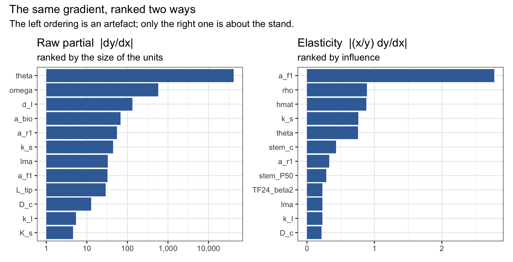
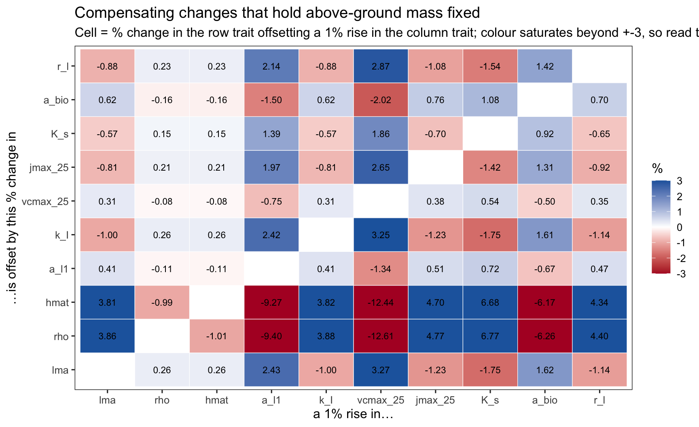
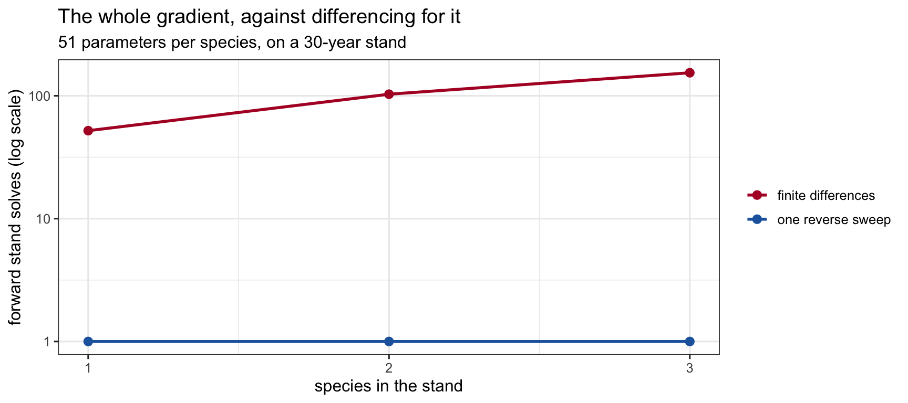

One sweep, every trade-off: reading the iso-biomass surface
guide
Code
library(plant)library(odelia)library(ggplot2)library(patchwork)library(dplyr)library(tidyr)# Shared driving and interpretation code, installed with plant.source(system.file("guide-helpers", "gradient_demo_helpers.R", package ="plant", mustWork =TRUE))theme_set(theme_bw(base_size =12))LIFETIME <-30METRIC <-"mass_above_ground"
What one reverse sweep buys
A stand gradient is one number per parameter: how much the stand’s above-ground mass moves when that parameter moves. One reverse sweep produces every one of them, and what it costs is set by the length of the forward run rather than by how many parameters there are. Finite differences would want another forward run per parameter.
Code
tr0 <-unlist(gd_traits())pt <-gd_point(tr0, lifetime = LIFETIME) # refine, run, sweeptibble::tibble(quantity =names(pt$value), value =as.numeric(pt$value)) |> knitr::kable(digits =4, caption ="The census at this stand.")
The census at this stand.
quantity
value
leaf_area
3.1742
mass_above_ground
11.6713
area_stem
0.0039
1.net_reproduction_ratio
3380.4173
1.offspring_production
3718.4591
Code
# Every count in the prose below reads from P rather than repeating a literal.# A literal disagrees with the sweep silently: nothing here would fail if TF24# gained a parameter.P <-ncol(pt$gradient)cat(sprintf("gradient: %d metrics x %d parameters, %d refused, %d ODE steps\n",nrow(pt$gradient), P, sum(pt$refused), pt$steps))
The point of this document is what that vector is, geometrically. It is the normal to the iso-biomass surface. So one sweep does not just rank the parameters — it hands over the entire 50-dimensional space of parameter changes that leave the stand’s biomass unchanged, and any interpretable pair can be read straight out of it.
Raw partials are not comparable, and the reason is units
The first thing to do with a gradient is not to rank it. A partial derivative carries the units of its parameter, so the largest entry is usually the one whose parameter has the smallest units.
Code
el <-gd_elasticity(pt$gradient, pt$value, pt$x)raw <-sort(abs(pt$gradient[METRIC, ]), decreasing =TRUE)[1:12]ela <-sort(abs(el[METRIC, ]), decreasing =TRUE)[1:12]# Two plots rather than two facets: each panel has to be ordered by its OWN# values, and reorder() inside a facet orders both by the same ones. The raw# panel is log-scaled because it spans four decades; a bar on a log axis starts# at the axis floor rather than at zero, so the elasticity panel, which spans# less than two decades, stays linear where a bar means what it looks like.bars <-function(v, title, sub, logx) { d <- tibble::tibble(name =sub("^1\\.", "", names(v)), v =as.numeric(v)) p <-ggplot(d, aes(stats::reorder(name, v), v)) +geom_col(fill ="#3b6ea5") +coord_flip() +labs(x =NULL, y =NULL, title = title, subtitle = sub)if (logx) p +scale_y_continuous(trans ="log10", labels = scales::comma) else p}bars(raw, "Raw partial |dy/dx|", "ranked by the size of the units", TRUE) +bars(ela, "Elasticity |(x/y) dy/dx|", "ranked by influence", FALSE) + patchwork::plot_annotation(title ="The same gradient, ranked two ways",subtitle ="The left ordering is an artefact; only the right one is about the stand.")

The two orderings disagree, and the left one is an artefact. theta leads it by more than two orders of magnitude, with omega second, because both are small numbers, not because the stand cares about them. Everything below is in elasticities — percentage change in the metric per percentage change in the parameter — which is dimensionless and therefore comparable across columns, and which is also the form a trait-database correlation is quoted in.
The trade-offs
Holding the metric fixed, the elasticity ratio gives the percentage change in one parameter that offsets a one-percent rise in another. This is -e_i / e_j, and it is available for every one of the 51 × 51 ordered pairs from the single sweep above.
Code
tro <-gd_tradeoff(el, METRIC)interp <-c("lma", "rho", "hmat", "a_l1", "k_I", "vcmax_25", "jmax_25", "K_s","a_bio", "r_l")have <-intersect(paste0("1.", interp), colnames(tro))sub <- tro[have, have]dimnames(sub) <-list(sub("^1\\.", "", have), sub("^1\\.", "", have))as.data.frame(as.table(sub)) |>setNames(c("rises", "offset_by", "pct")) |>filter(is.finite(pct)) |>ggplot(aes(offset_by, rises, fill = pct)) +geom_tile(colour ="white") +geom_text(aes(label =sprintf("%.2f", pct)), size =3) +scale_fill_gradient2(low ="#b2182b", mid ="white", high ="#2166ac",midpoint =0, limits =c(-3, 3), oob = scales::squish) +labs(title ="Compensating changes that hold above-ground mass fixed",subtitle =paste("Cell = % change in the row trait offsetting a 1% rise","in the column trait; colour saturates beyond +-3, so","read the numbers"),x ="a 1% rise in…", y ="…is offset by this % change in", fill ="%") +theme(panel.grid =element_blank())

A cell reads: a one percent rise in the column parameter is offset by this many percent in the row parameter. A negative entry means the two push the same way, so compensating means moving one back.
The hyperpar wedge, which changes the answer
The columns above are partial derivatives: each holds all other parameters fixed. That is not what an ecologist means by “the LMA derivative”, because TF24’s trade-offs (default_hyperpar("TF24")) derive further parameters from the traits — k_l and r_l from lma; r_s and r_b from rho; a_f3 from omega; stem_P50 from K_s; and r_l also from vcmax_25 and jmax_25. Raising LMA in the field moves those with it: both k_l and r_l fall.
The total derivative chains the gradient through that map. The Jacobian is taken by differencing the trade-offs themselves rather than restating their algebra, so there is one source of truth for the derived forms.
Code
J <-gd_hyperpar_jacobian(tr0)gt <-gd_trait_gradient(pt$gradient, J)te <-gd_trait_elasticity(gt, pt$value, tr0)moved <-rownames(J)[apply(J, 1, function(r) any(r !=0))]cat("parameters that move when a trait moves:", paste(moved, collapse =", "), "\n")
parameters that move when a trait moves: lma, hmat, k_I, a_l1, a_l2, k_l, r_l
Code
partial <- el[METRIC, paste0("1.", names(tr0))]tibble::tibble(trait =names(tr0),partial =as.numeric(partial),total =as.numeric(te[METRIC, names(tr0)])) |>mutate(ratio = total / partial) |> knitr::kable(digits =4,caption ="Elasticity of above-ground mass: holding the derived parameters fixed, against carrying them along.")
Elasticity of above-ground mass: holding the derived parameters fixed, against carrying them along.
trait
partial
total
ratio
lma
-0.2308
-0.0233
0.1009
hmat
0.8786
0.8786
1.0000
k_I
-0.2298
-0.2298
1.0000
a_l1
0.0948
0.0948
1.0000
a_l2
0.0086
0.0086
1.0000
Only lma has derived children in this trait set, so it is the only row where the two columns differ — which is the control: the other four traits chain through the identity and must come out unchanged.
What this costs, and why reverse mode is the reason it is possible
Code
# Counted, not timed. The axis is forward stand solves -- what each method has# to run -- because a seconds axis is a figure from whenever it was last taken.# Reverse mode replaces the extra solves with one reverse pass over the steps# the first solve already recorded.sp <-1:3tibble::tibble(species =rep(sp, 2),solves =c(rep(1L, length(sp)), 1L + P * sp),method =rep(c("one reverse sweep", "finite differences"),each =length(sp))) |>ggplot(aes(species, solves, colour = method)) +geom_line(linewidth =1) +geom_point(size =2.5) +scale_y_continuous(trans ="log10", labels = scales::comma) +scale_x_continuous(breaks = sp) +scale_colour_manual(values =c("finite differences"="#b2182b","one reverse sweep"="#2166ac")) +labs(title ="The whole gradient, against differencing for it",subtitle =sprintf("%d parameters per species, on a %d-year stand", P, LIFETIME),x ="species in the stand", y ="forward stand solves (log scale)",colour =NULL)

The count does not move with the number of parameters: three species means 153 of them and still one forward solve, while differencing wants a solve per parameter on top of it. That is the whole argument, and it gets better as the community grows.
What to be careful of
A near-zero denominator is not a trade-off. If a parameter barely moves the metric, the change in it that offsets anything is unbounded; gd_tradeoff() returns NA there rather than a large number that looks like an answer.
The tangent plane is local. These ratios hold for infinitesimal changes. A 10% move is outside where a linearisation is trustworthy, and the honest way to check one is to take a second gradient at the moved point and see whether it still says the same thing.
A missing column is not a zero effect.stem_b and psi_crit have no column: they are derived from stem_P50 and stem_c, and the model takes no gradient through them. Their effect arrives through stem_P50 and stem_c.